Evangelion watch order.
The recommended way to watch Evangelion: the original TV series, its theatrical ending, then the four Rebuild of Evangelion films.
Enter this code in Kuvacult to create this watchlist, already in order.
Evangelion in order
- 1
Neon Genesis Evangelion
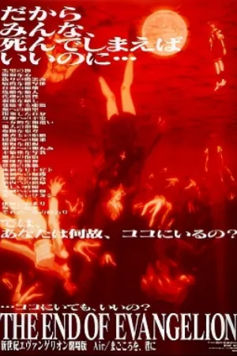
2The End of Evangelion
- 3
Evangelion: 1.0 You Are (Not) Alone
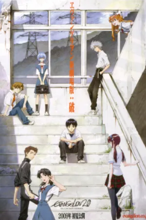
4Evangelion: 2.0 You Can (Not) Advance
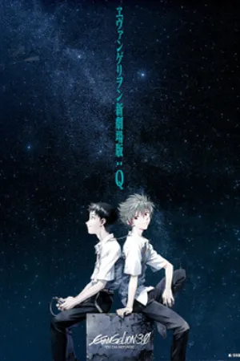
5Evangelion: 3.0 You Can (Not) Redo
- 6
Evangelion: 3.0+1.0 Thrice Upon a Time
Questions
When should I watch The End of Evangelion?
After episode 26 of the TV series. Many fans watch it in place of episodes 25 and 26, since it shows the same events from the outside.
Do I need to watch the series before the Rebuild films?
No, the Rebuild films start the story over. Watching the series first adds weight to the later films, which change the story more and more.
What about Death and Rebirth?
Evangelion: Death and Rebirth is mostly a recap of the series. You can skip it if you have seen the episodes.
More chronological orders
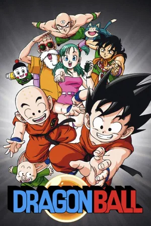
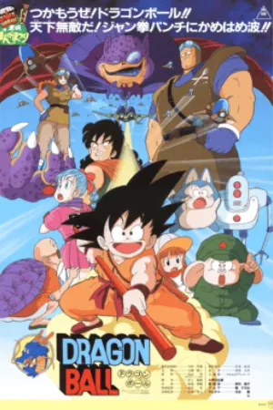
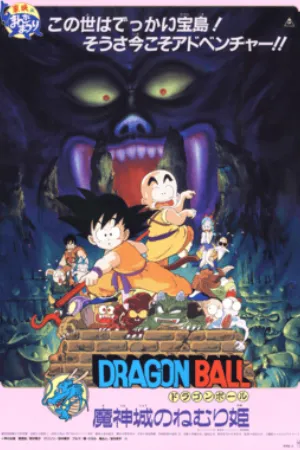
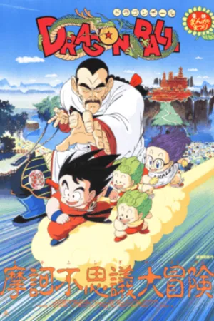
Dragon Ball watch order
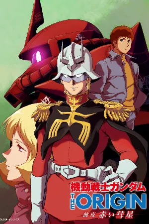
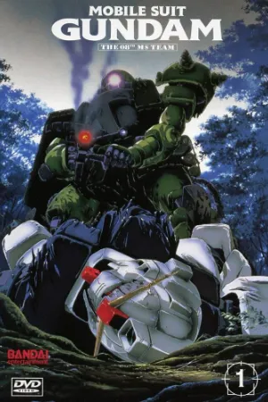
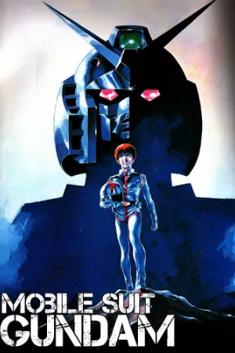
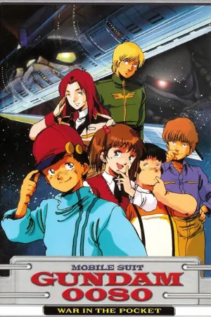
Gundam watch order
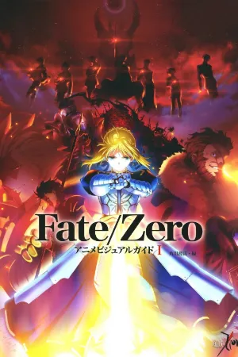
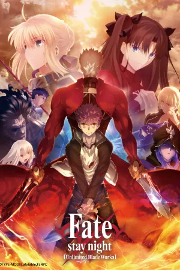
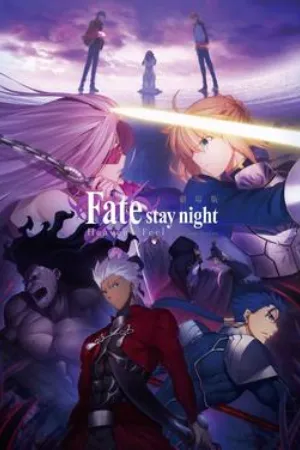
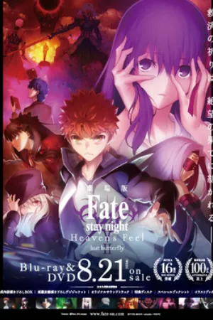
Fate watch order
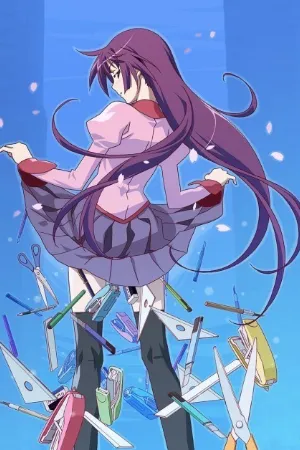
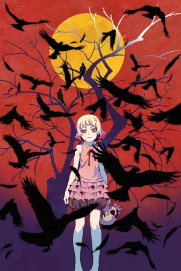
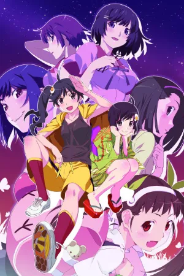
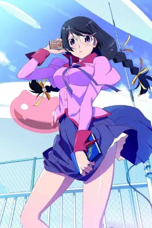
Monogatari watch order
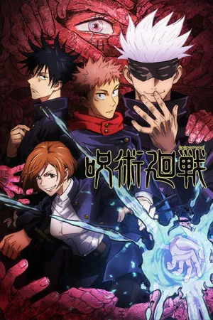
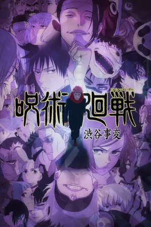
Jujutsu Kaisen watch order
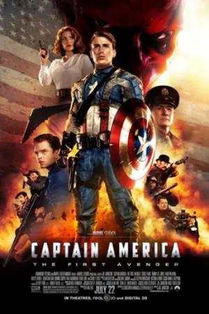
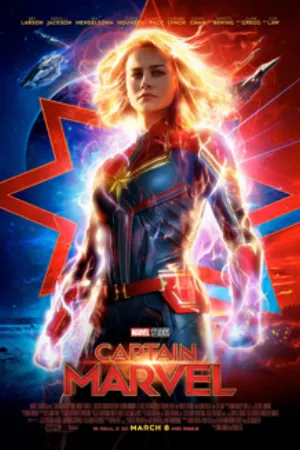
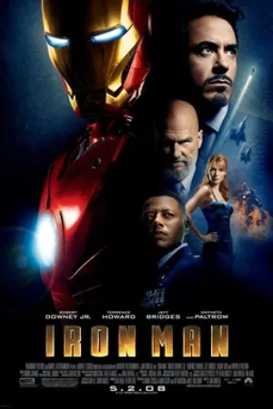
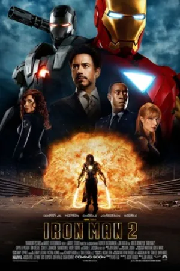
MCU in chronological order
Watch it with your friends.
Kuvacult is a free movie tracker with shared watchlists, a veto game for picking movie night, and séances for watching together.